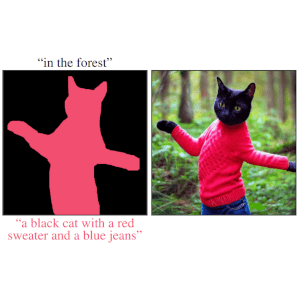
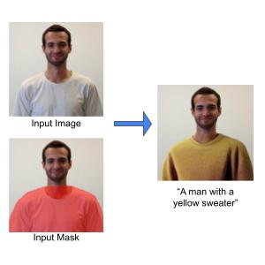
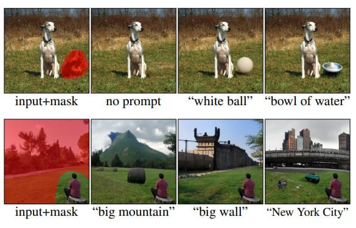
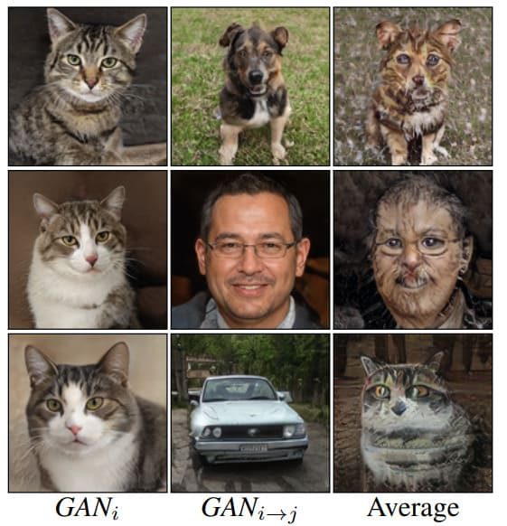

SpaText: Spatio-Textual Representation for Controllable Image Generation
CVPR, 2023
We suggest a new method for text-to-image generation using open-vocabulary scene control.

I am a Ph.D. candidate at the School of Computer Science and Engineering at the Hebrew University of Jerusalem, under the joint supervision of Prof. Dani Lischinski and Dr. Ohad Fried.
In addition, I am a Research Intern at Google AI (Google Research). Previously, I spent the summer of 2022 at Meta AI Research (FAIR) as a Research Scientist Intern.
My research interests include machine learning, computer vision, and generative models. More specifically, I am interested in developing new tools for content synthesis and editing --- known popularly as Generative AI.

We suggest a new method for text-to-image generation using open-vocabulary scene control.

We present an accelerated solution to the task of local text-driven editing of generic images, where the desired edits are confined to a user-provided mask.

We introduce a solution for performing local (region-based) edits in generic natural images, based on a natural language description along with an ROI mask.

We tackle the problem of model merging, given two constraints that often come up in the real world: (1) no access to the original training data, and (2) without increasing the size of the neural network.